Going further
Hopefully the previous activities raised your curiosity, and you'll be confident in your ability to learn more in autonomy. If that's the case, here are ways you could follow to deepen your knowledge and practice in mobile robotics while still taking incremental steps.
Controllers
| Arduino Nano | Arduino Uno | Raspberry |
|---|---|---|
| 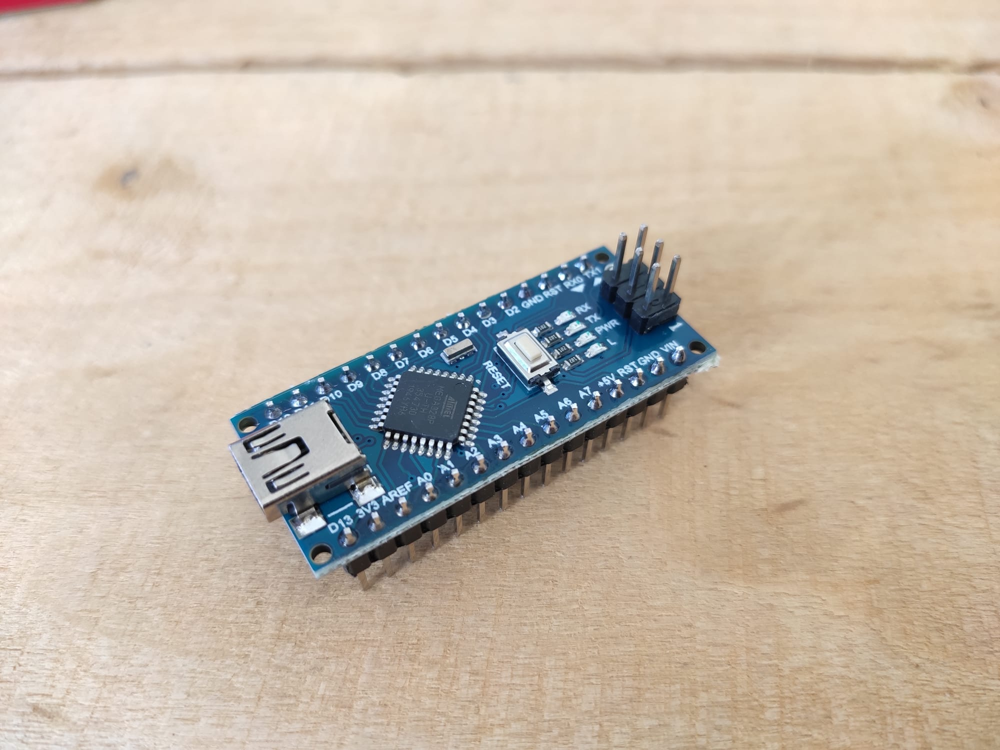 | 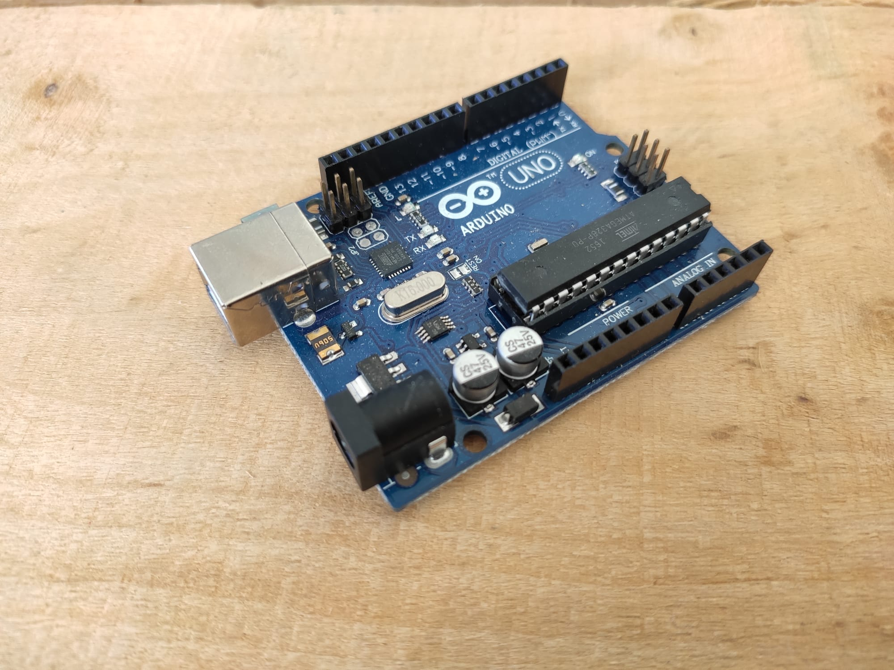 | 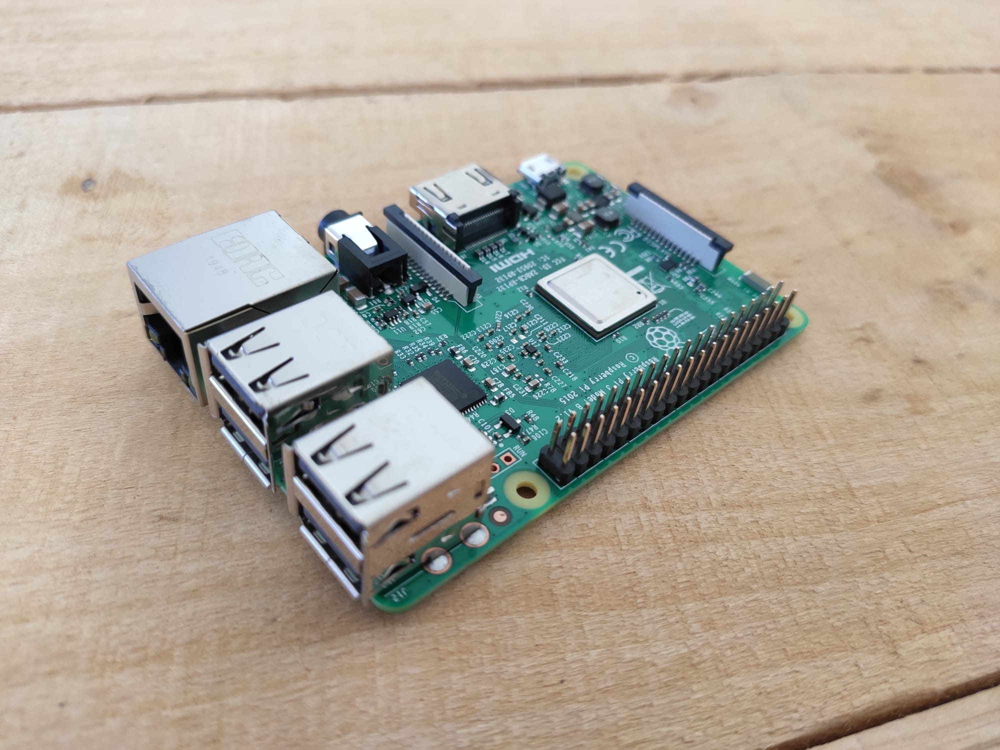 |
While we used the micro:bit this week, most of what you learned can be applied to other controllers. Among the popular options, you will often hear about the arduino and the raspberry pi which are great options to continue your exploration of mobile robotics.
Using the arduino you could for instance more easily use a very wide variety of sensors thanks to all the libraries available for it. You will also have more easily access to the lower level architecture of the controller. One simple example is the use of interrupts which is very standard in mobile robotics but which is not available in python with the micro:bit.
Raspberry pi is different. It has GPIO so that you can connect it to sensors and actuators... But it is a computer. So when you start it, it is not running a very basic program with a while true loop, it runs a whole operating system. It comes with great advantages like being able to use a camera, which is a really useful sensor for mobile robotics, but it comes at the cost of being much more complex to setup and harder to control its GPIO in real-time.
Challenge : create an autonomous robot base on arduino
Now that you know how to use servo motors, the HC-SR04 and how to design a robot frame, you can built a robot using arduino. The only thing you'll have to learn is to program in C++ and find a way to power the arduino (I'd recommand using a power bank).
Sensors
| HC-SR04 | Sharp sensor | TOF10120 | Buggy with sharp sensor |
|---|---|---|---|
| 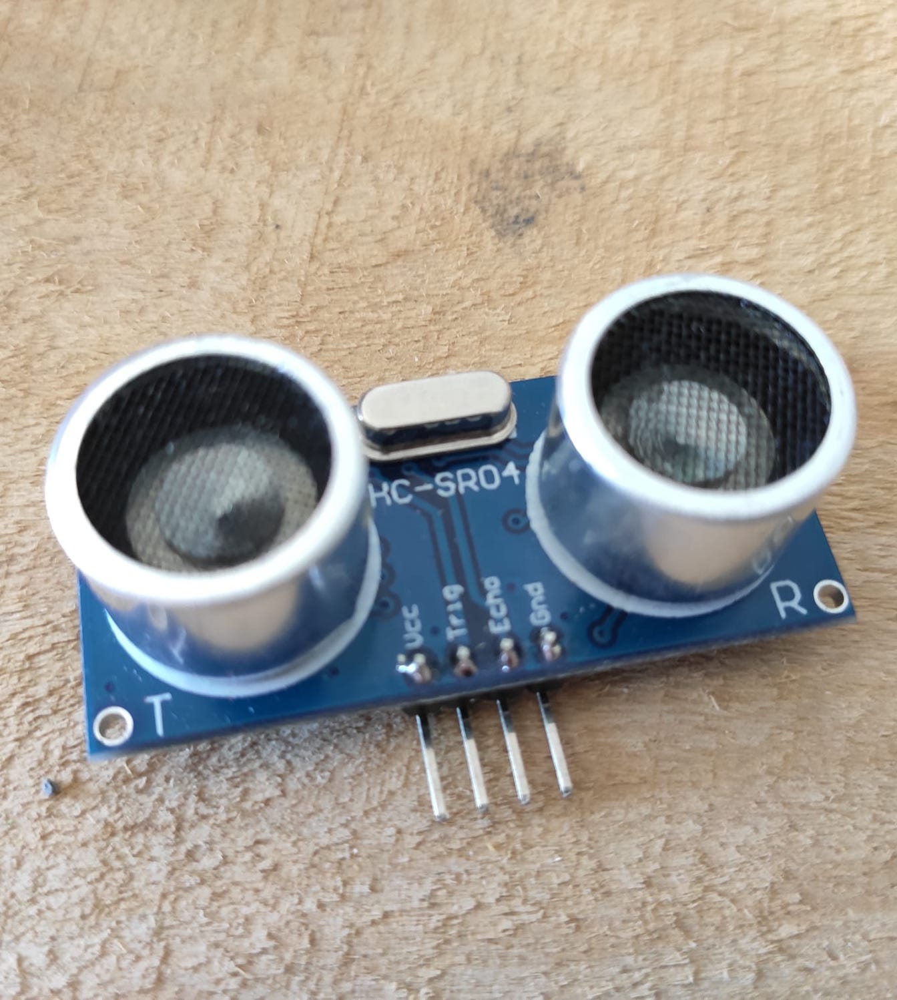 | 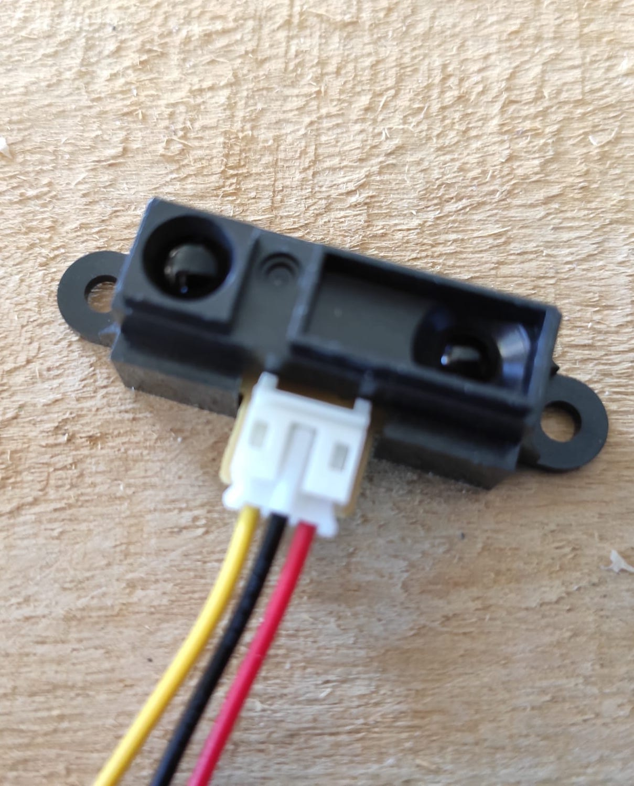 | 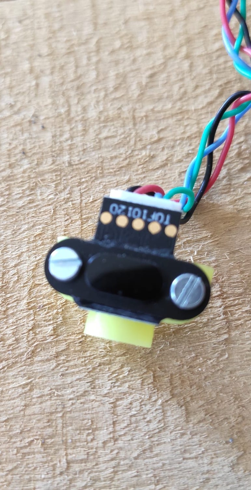 | 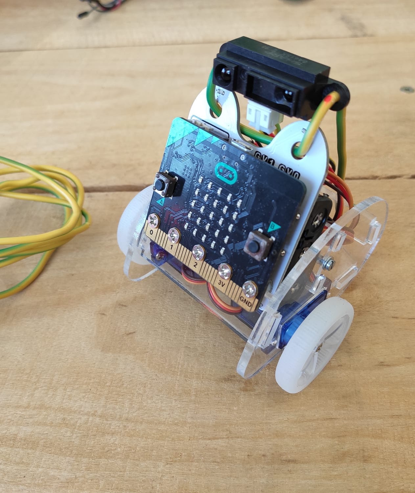 |
Figure: Different distance sensors and an application
During this summerschool you interacted with different sensors: buttons, a potentiometer, the HC-SR04, the accelerometer, the radio receptor. This already covers quite a few types of sensors: active/passive, exteroceptive/proprioceptive (read more on this topic here). But those are just a few in so many different types of sensors. With micro:bit, as a distance sensor for instance, you could use a mechanical endstop (a bumper), or an infrared distance sensor, or a GP2Y0A60 or still a TOF10120! In doing so you'll learn not only different protocols to interface sensors but you can also learn the physics behind and link it to what you learn in school.
Challenge : Using new sensors
- Learn to use new distance sensors (sharp, TOF). Can you identify their advantages and disadvantages ? (At least a big advantage of the GP2Y0A60 is that it only requires one pin working with analog read so that you can mount it on the buggy).
- Make a robot that follows the light. For this keep the same controller, the micro:bit, and learn to use new type of sensors.
Actuators
| DC motors and L298N | Stepper motors and A4988 | Upcycled RC car |
|---|---|---|
| 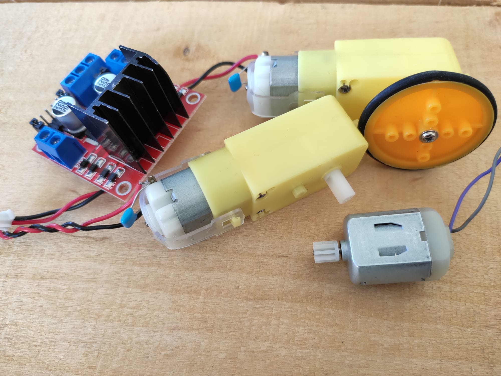 | 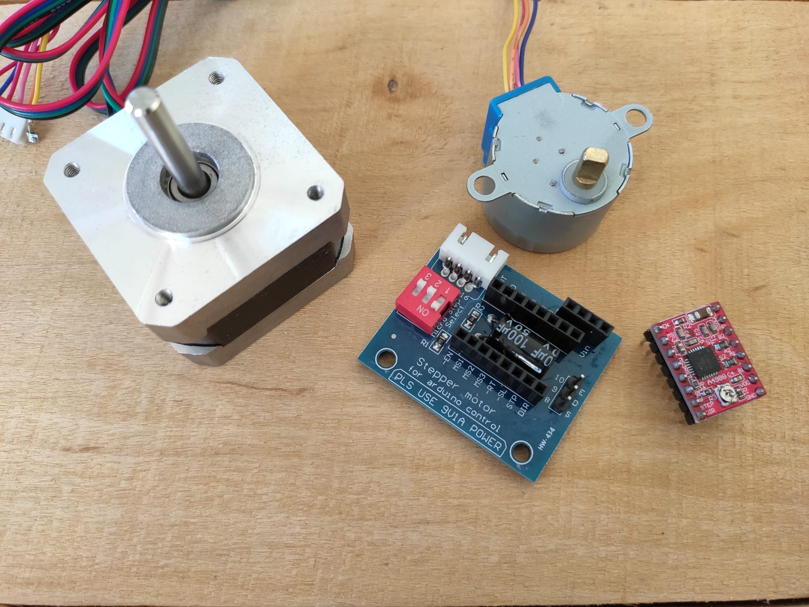 | 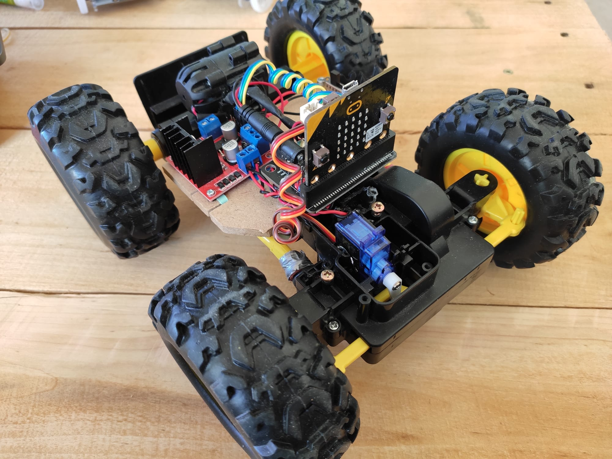 |
Figure: Different distance sensors and an application
In terms of actuators, you already managed to control LEDs, continuous servo motors and a radio emittor. While LEDs are relatively standard to start with, it is less the case for continuous servo motors. Indeed those are servo motors that have been modified (and servo is actually a misnomer for them). So if you wanted to expand your possibilities with robotics while staying in your confort zone, standard servos could be a great options. As their angle of rotation can be controlled, with them you can for instance build robotic arms.
Some other options for motors could be to use DC motors or stepper motors. To use such motors you will usually need some extra electronics. For instance the L298N is a common in arduino project involving DC motors, but works equally well with micro:bit. The advantage of DC motors is that they can go really fast. For stepper motors you will usually need a stepper driver like the A4988 (note that the minimum operating voltage of the A4988 driver is usually written to be 8V but it can work with small stepper motor on 5V). The advantage of stepper drivers is that you can control their rotation precisely, step by step, hence their name.
While the use of extra electronics can seem intimidating at first, don't get fooled, thanks to modular electronics the process involves mostly skills and knowledge similar to the ones in computer science. Each module can be seen as a function and your goal is to use those functions appropriately (one difference with computer science though is that if you make a mistake you might have more than a bug... like burn your pieces).
Challenge : Using new types of motors
- Mount the HC-SR04 on a standard servo motor, then design and program a movement alarm. The sensor is mounted on the motor so that you can detect any distance difference in time with a 180° field of view.
- Pump up your buggy and make it go much faster (for this you'll probably need more than 3 pins). For this you will probably need DC motors.
- Make a robot which is more precise in its displacement, so that for instance you can not only make it turn but also control at which angle it will turn (for this you'll probably need more than 3 pins too). For this use stepper motors.
Extension board, electronics and battery management
| Extension with no power input, pins to solder | Extension with no power input | Extension with usb power input | Solar tracker from extension with power input |
|---|---|---|---|
| 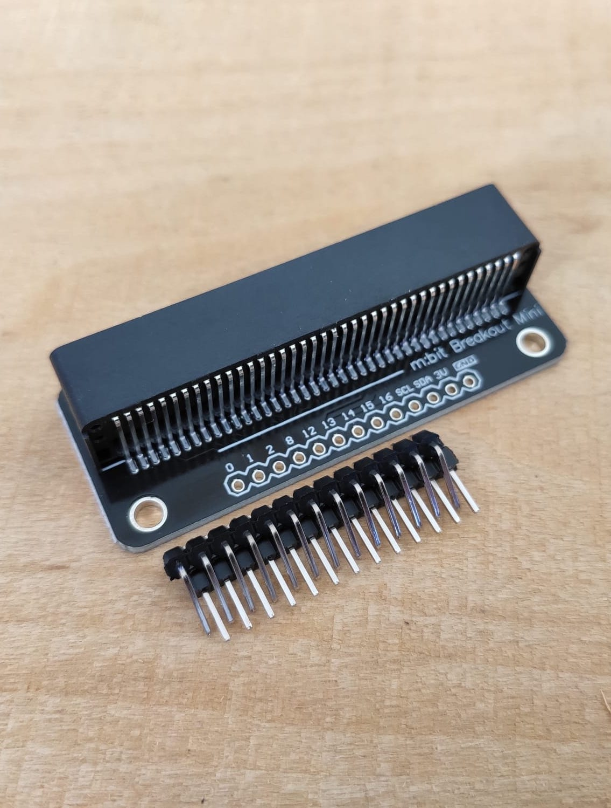 | 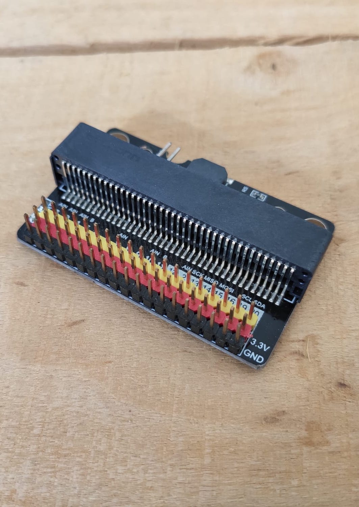 | 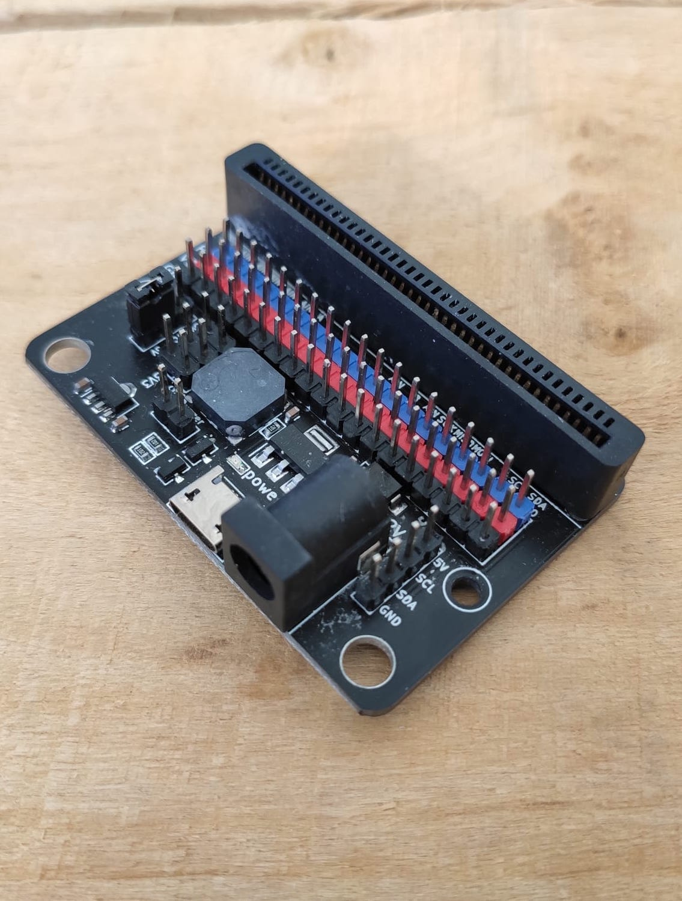 | 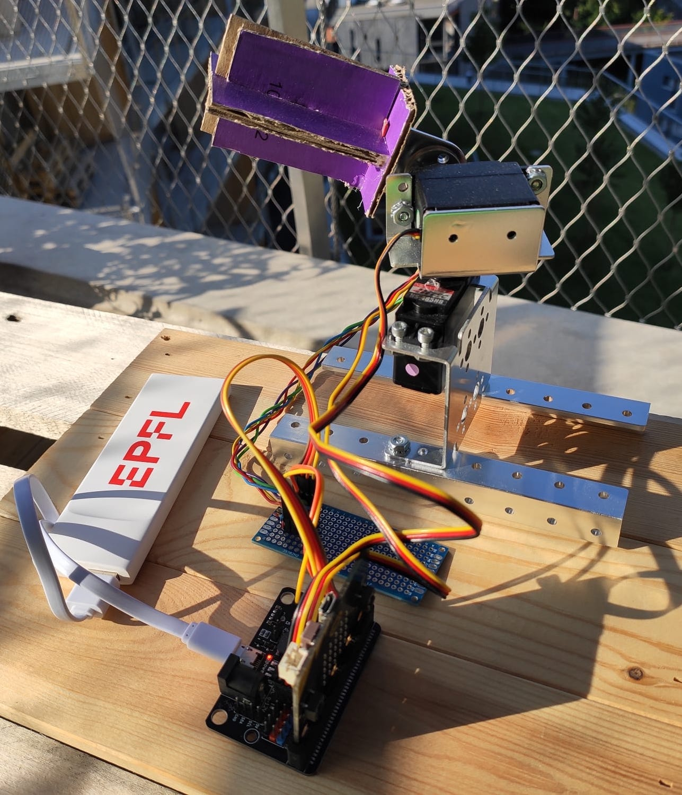 |
Figure: Different types of extension boards among many others and a project made possible with those.
To solve standard robotics problem (like building an avoiding obstacle robot), we saw that the buggy mainboard falls quickly short of pins. But this limitation is not due to the micro:bit, but to the extension board. The micro:bit as about 20 pins which can be used, and to use them you only need another extension board. However the buggy mainboard offers more than an easy access to the pins, it also offers a power supply.
To tackle more complex robotics problem with micro:bit you will therefore need to find not only an extension board but also find a way to power it up if the battery does not come with the board which is often the case. If you don't want to get into soldering yet, then one option could be for you to use a board that give you access to many pins with pin headers but also that comes with either a battery or with a usb connector which will allow you to power the board using any standard power bank. If you want to get in soldering, then the world is yours.
Challenge : Use more pins of the micro:bit
Find an extension board and adequate power supply to make an obstacle avoiding robot with the HC-SR04 and one micro:bit.
Making
| Laser cutted MDF frame v1 | Laser cutted MDF framev2 | 3D printed frame and wheels |
|---|---|---|
| 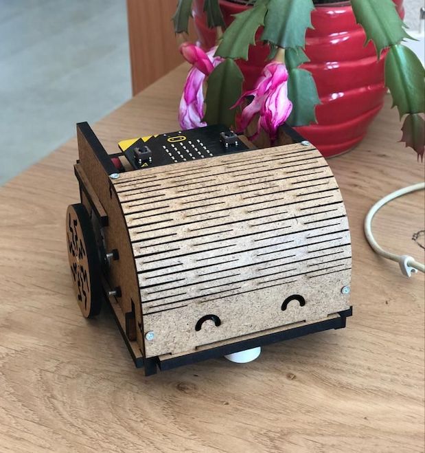 | 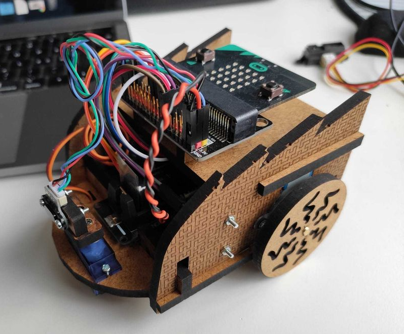 | 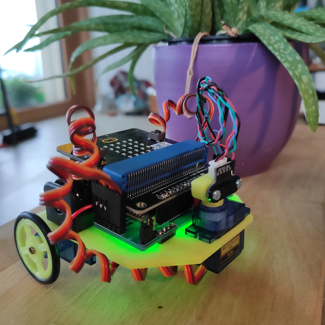 |
Figure: Playing with wood, 3D printing and electronics
While you have made your first steps into prototyping with cardboard and designing with CAD, the possibilities to go further are endless with both. Search for "Cardboard robot" on youtube and you'll probably be amased at the creativity and the patience of some authors. As having the tools to work with other materials is not a chance everybody has, reproducing similar works is a great way for you to get confortable with the basics of mecanics and designing.
Finally, a step further into CAD could be for you to design anything you can imagine, go on a website like instructables if you temporarily lack inspiration, and of course go into the closest fablab to learn how to handle laser cutter or 3D printers, and hopefully meet a community of people thirsty for learning. Although if you enjoy some quietness, 3D printers are getting very affordable those days and are now cheaper than most smartphones so you don't even need to go to a fablab.
Challenge : Make
- Build a walking robot out of cardboard.
- Get in the closest fablab and laser cut or 3D print your own frame to hold all the electronics together.